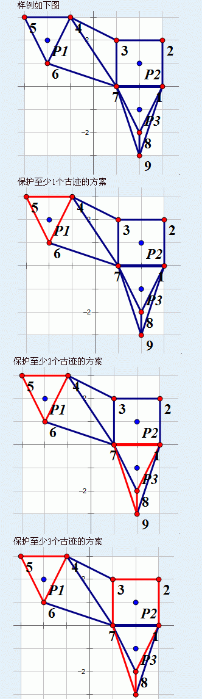

第一行包含三个正整数p,n,m表示古迹的个数，端点个数和可以修建的篱笆条数。
接下来p行，每行包含两个整数，表示每个古迹的坐标。
接下来n行，每行包含两个整数，表示每个端点的坐标。这些端点按照输入的顺序依次用1到n的整数编号。
最后m行，每行包含三个非负整数u,v,w，表示可以在端点u和端点v之间花w的代价修建一段篱笆。
某校由于历史悠久，校园中有大量的名胜古迹。为了更好地保护这些古迹，学校决定用篱笆将这些古迹围起来。
现在已知有p个地点的古迹需要保护。这些古迹可以看做二维平面上的整数点。有n个点可以作为篱笆的端点，这些端点的坐标也为二维平面上的整数。端点用1到n的整数编号。
有m对端点之间可以修建篱笆。用(u,v,w)描述一段可以修建的篱笆，表示端点u和端点v之间可以花费w的代价修建一段。篱笆都看做直线段。为了方便设计，这些可以修建的篱笆都是不会相交的（只会在端点处相交）。
将一个古迹围起来是指存在一个由篱笆构成的简单多边形，这个古迹在该多边形内部。
由于经费问题，学校希望修建篱笆的花费最小。你需要输出将至少1个，2个，…，p个古迹围起来的最小花费。
第一行包含三个正整数p,n,m表示古迹的个数，端点个数和可以修建的篱笆条数。
接下来p行，每行包含两个整数，表示每个古迹的坐标。
接下来n行，每行包含两个整数，表示每个端点的坐标。这些端点按照输入的顺序依次用1到n的整数编号。
最后m行，每行包含三个非负整数u,v,w，表示可以在端点u和端点v之间花w的代价修建一段篱笆。
输出p行，分别表示将至少1个，2个，…，p个古迹围起来的最小花费。
3 9 15
-2 2
2 1
2 -1
3 0
3 2
1 2
-1 3
-3 3
-2 1
1 0
2 -2
2 -3
1 2 20
1 7 40
1 8 10
1 9 100
2 3 50
3 4 1000
3 7 10
4 5 10
4 6 10
4 7 1000
5 6 10
6 7 1000
7 8 120
7 9 10
8 9 10
30
100
140
对于100%的数据，n≤100， m≤C(n,2)，p≤10。所有坐标位置的两维绝对值不超过109，u,v不超过n，w不超过106。
保证可以修建的篱笆不会经过古迹。保证可以修建的两段篱笆不会在非端点处相交或重合。保证至少存在一种方案可以包围所有古迹。保证n个点互不相同。